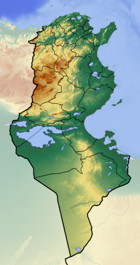

TUNIS
---.TUNIS
Tunis (/ty.nis/3 ; arabe : تونس, tūnis /ˈtuːnɪs/4 Écouter) est la ville la plus peuplée et la capitale de la Tunisie. Elle est aussi le chef-lieu du gouvernorat du même nom depuis sa création en 1956. Située au nord du pays, au fond du golfe de Tunis dont elle est séparée par le lac de Tunis, la cité s'étend sur la plaine côtière et les collines avoisinantes. Son cœur historique est la médina, inscrite au patrimoine mondial de l'Unesco.
Bourgade modeste placée dans l'ombre de Carthage, Kairouan puis Mahdia, elle est finalement désignée comme capitale le 20 septembre 1159 (5 ramadan 554 du calendrier musulman), sous l'impulsion des Almohades, puis confirmée dans son statut sous la dynastie des Hafsides en 1228 et à l'indépendance du pays le 20 mars 1956.
Tunis est la capitale économique et commerciale de la Tunisie. La densité de son réseau routier, autoroutier et sa structure aéroportuaire en font un point de convergence pour les transports nationaux. Cette situation est issue d'une longue évolution, en particulier des conceptions centralisatrices qui donnent un rôle considérable à la capitale et tendent à y concentrer à l'extrême les institutions.
En 2014, la population de la municipalité de Tunis intra-muros est de 638 845 habitants d'après le recensement de l'Institut national de la statistique2. Néanmoins, au cours du xxe siècle, l'agglomération s'est largement développée hors des limites de la municipalité, s'étendant sur quatre gouvernorats, Tunis, l'Ariana, Ben Arous et La Manouba. Le Grand Tunis compte 2 643 695 habitants en 2014, soit environ 14 % de la population du pays.
En 2017, Tunis est classée comme la cinquième ville arabe où il fait bon vivre5.
Étymologie
Selon Paul Sebag, « Tunis » est la transcription française d'un nom qui se prononce tûnus, tûnas ou tûnis (û ayant la valeur du « ou » français) en arabe tunisien. Les trois vocables sont indiqués par le géographe syrien Yaqout al-Rumi dans son ouvrage Mu'jam al-Bûldan (Dictionnaire des pays) ; le dernier est celui qui prédomine dans le nom de la ville de même que dans le gentilé tûnisi ou tûnusi (tunisien). Ce vocable, issu du verbe ens en berbère, se définit comme « être couché » ou « se coucher » et par extension « aller passer la nuit à », « arriver de manière à passer la nuit », « aller passer la nuit chez ». Parmi les très nombreux dérivés de ce terme, on trouve tinés (pluriel de ténésé) indiquant « le fait d'être couché » et par extension le « fait de passer la nuit »6.
Compte tenu des variations vocaliques dans le temps et l'espace, le nom de Tunis a donc très probablement le sens de « campement de nuit », « bivouac » ou « halte ». Dans la toponymie antique de l'Afrique romaine, on note également les noms proches des localités de Tuniza (actuelle El Kala), Thunusuda (actuelle Sidi Meskine), Thinissut (actuelle Bir Bouregba), Thunisa (actuelle Ras Jebel) ou Cartennæ (actuelle Ténès en Algérie)6. Toutes ces localités berbères se situaient sur des voies romaines et ont sans doute servi de relais ou de halte. Du nom de Tunis est dérivé en français le terme « Tunisie » qui désigne le pays dont cette ville est la capitale. Ce nom est lancé par des géographes et historiens français par analogie avec le mot « Algérie » forgé à partir d'Alger. Ce mot s'est depuis répandu dans toutes les langues européennes. Or, le terme Tunes désignant à la fois la ville et le pays, il ne peut être clairement compris que lu dans son contexte : c'est donc le sens de la phrase qui permet de savoir si l'on parle de la Tunisie ou de Tunis.
D'autres explications existent sur l'origine du nom de Tunis : il dériverait du terme berbère Tinast qui pourrait signifier « clé de la fertilité », en référence à la fertilité du territoire7.
D'autres le lient à la déesse punique Tanit, ét>
